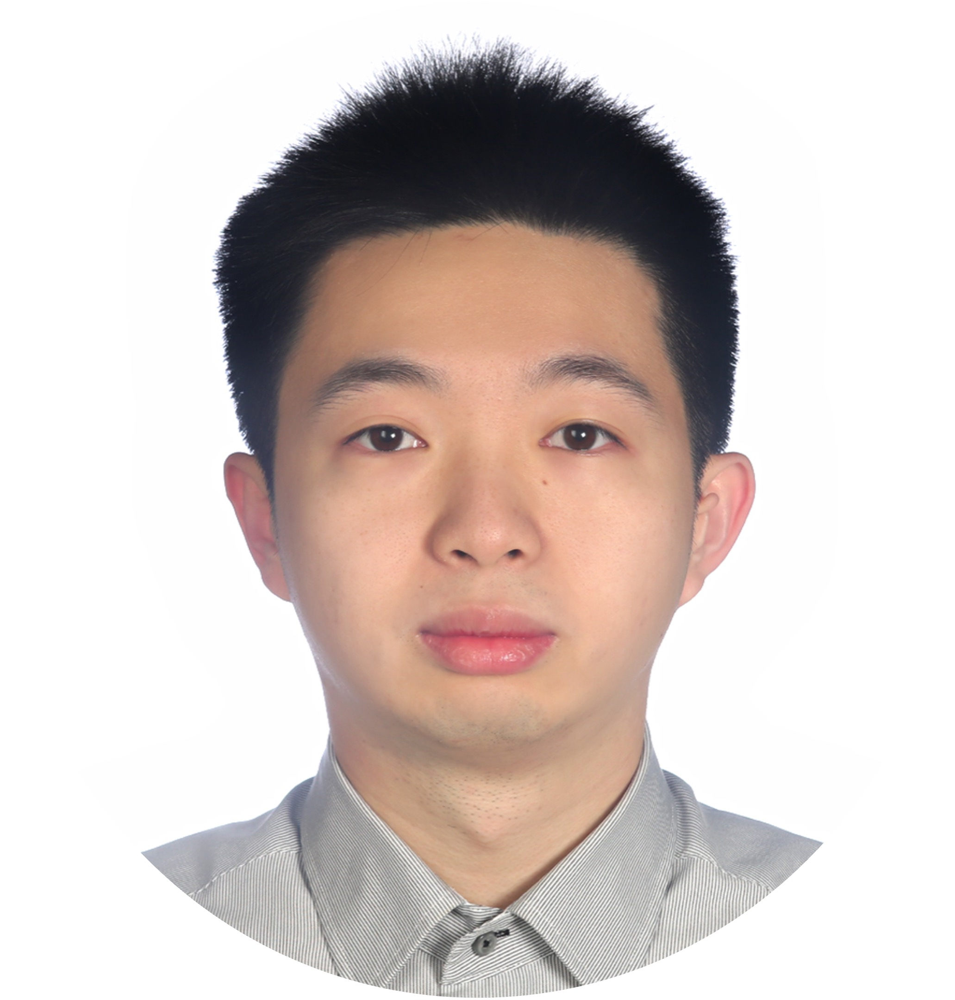

CGMH Burn Center
Visual-Driven Intelligence Lab
Combining AI with quantitative clinical research across burn care, rhinoplasty, and craniofacial reconstruction
Learn moreAbout VDI Lab
Visual Intelligence for Smarter Intensive Burn Care
CGMH Burn Center Visual-Driven Intelligence Lab (VDI Lab) was established in 2025 by the Linkou CGMH Burn Center, National Yang Ming Chiao Tung University, and Chang Gung University AI teams. The lab is dedicated to developing clinical applications that combine visual image analysis, natural language processing, multimodal AI models, and visual question answering technologies.
Rooted in burn care, the lab has progressively extended into rhinoplasty and craniofacial reconstruction. Our research spans automated assessment of burn area and depth, inhalation-injury risk prediction, quantitative rhinoplasty planning, and 3D image analysis and risk prediction for craniofacial and orthognathic surgery, together with integrated medical-record and image analysis powering clinical decision-support systems. Our goal is to create practical AI tools that enhance the precision, efficiency, and humanization of clinical care.
Research
Quantitative clinical research and AI / computational methods across burn care, rhinoplasty, and craniofacial reconstruction
Burn Outcomes & Big-Data Analysis
Burn patient outcomes from the Chang Gung Research Database (CGRD), covering transfusion strategy, infection, length of stay, and reconstructive burden.
Burn Imaging AI (TBSA / Depth / Inhalation)
Deep learning for automatic burn area (TBSA), depth and facial-wound recognition, plus inhalation-injury risk prediction — objective assessment to support clinical decisions.
Quantitative Rhinoplasty
Objective pre/post rhinoplasty assessment via image landmarks and angle measurement, building reproducible aesthetic evaluation and outcome-prediction methods.
Craniofacial & Orthognathic Deep Learning
Automatic craniofacial landmark detection and soft/hard-tissue prediction from CBCT and 3D imaging, applied to orthognathic planning and bad-split risk.
Multimodal Clinical AI & 3D
Multimodal models integrating imaging, text and structured clinical data, plus 3D wound reconstruction and body-surface computation.
Annotation & Measurement Tools
In-house landmark annotation and measurement tools with intra/inter-rater reliability support — the methodological backbone of quantitative imaging research.
Members
Interdisciplinary team combining medicine and engineering
Chih-Jung Huang
Plastic Surgeon
Burn Intensive Care, Data Science
Ying-Chia Lin
Ph.D. in Computer Science
Natural Language, Large Language Models
Yi-Fang Chang
Professor of Biomedical Informatics
Medical Image Analysis

Wei-Chun Chen
Biomedical Informatics
Master's Student
Publications
Our research is published in internationally renowned journals
-
Machine learning approach for predicting inhalation injury in patients with burns
Contact Us
Welcome to contact us and jointly advance the development of clinical AI in medicine
Phone
+886-3-328-1200 ext. 8123
Address
No. 5, Fuxing St., Guishan Dist.,
Taoyuan City, Taiwan